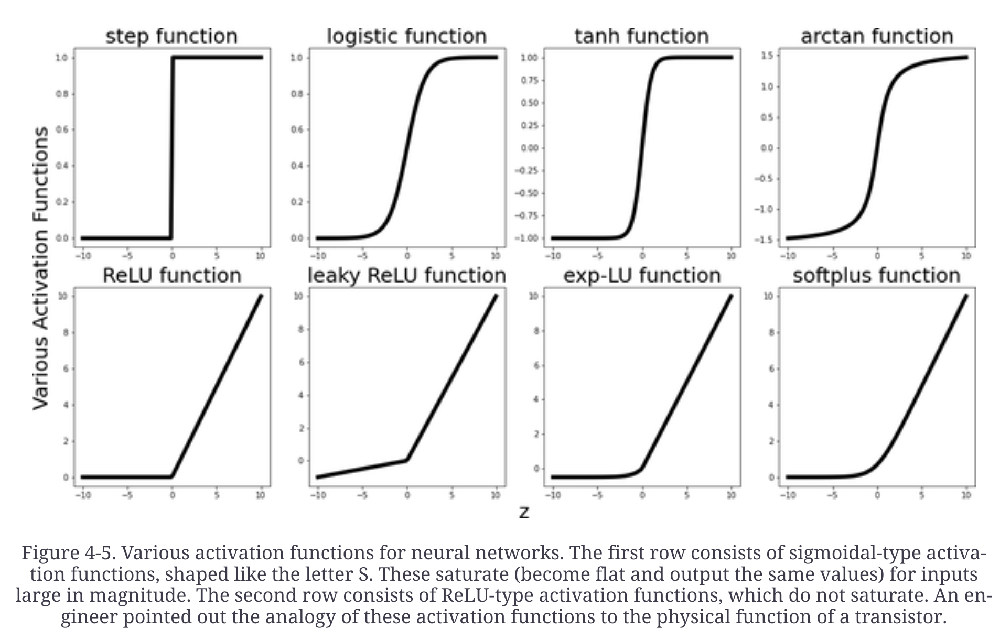
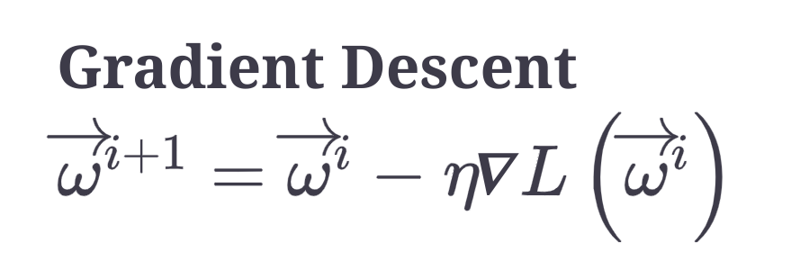
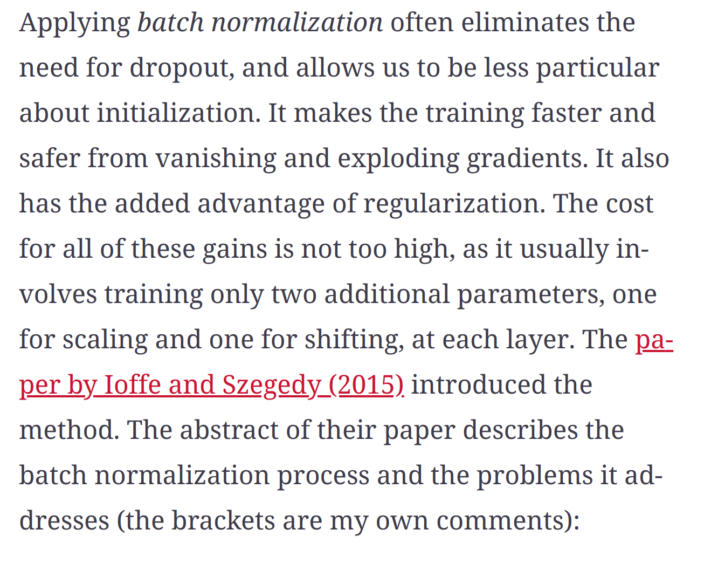

Gradient Descent, Activations and Regularisation
Universal Approximation function
- We don’t know the true function which generated the data. Neural networks training function are used to approximate the true function which generated the data. Training function is used to generate the predictions. Universal approximation theorem assert that neural networks can approximate the underlying functions to any precision.
KL Divergence
- An exmaple of a loss function (in the context of neural networks). It quantifies the amount of information lost when the learned distribution is used to approximate the true distribution or the relative entropy of the true distribution with respect to the learned distribution
Important points
- The landscape of the loss function is non-convex, it has local minima
- Deep learning still lacks a solid theoretical foundation


Dont initialize with all zeros or all equal numbers. This will diminish the network’s ability to learn different features, since different nodes will output exactly the same numbers.
As neural networks are non-convex, how we initiate the w’s matters a lot. weights are sampled either from the uniform distribution over small intervals (Xavier Glorot initialization) or from Gaussian distribution with a preselected mean and variance (Kaiming He initialization)
The scale of the features affects the performance of the gradient descent. Very different scales of the input features change the shape of the bowl of the loss function, making minimization process harder. This means that the shape of the bowl of loss function is a long narrow valley. Gradient descent zigzags as it tries to locate the minimum and slowing down the convergence considerably.
Near the minima (local or global), flat regions or saddle points of the loss function, the gradient descent method crawls.
Stochastic gradient descent - the points hop a lot, as opposed to following a more consistent route toward the minimum.
Loss functions like mean squared error, cross entropy and hinge loss are all convex but not nondecreasing (what is non descreasing???)
Regularization techniques
Dropout
- Usually about twenty percent of the input layer’s nodes and about half of each of the hidden layers nodes are randomly dropped.
Early stopping
- The error on the validation set start increasing after a decrease. This indicates the start of overfitting and we stop training.
Batch normalization
- Normalize the inputs to each layer of the network. Inputs to each layer will have mean zero and variance one. 
Weight Decay (ridge, lasso and elasticnet)
- Some regularization is always good
- Ridge differentiation is more stable
- If we need to select features than use lasso
- Elasticnet is preferred over lasso as it might behave badly when features are greater than data instances or when several features are correlated.